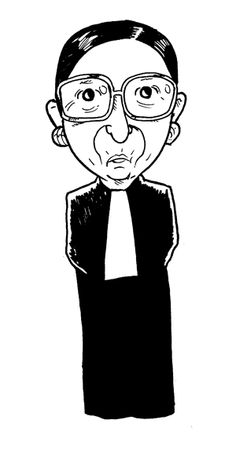
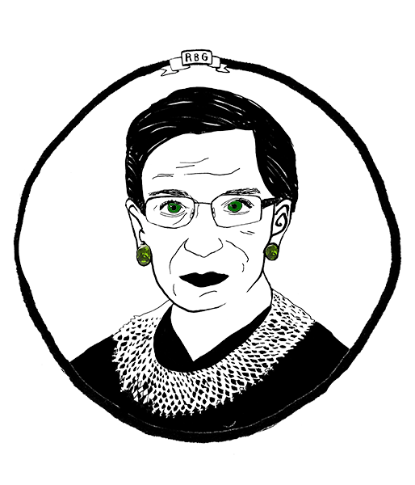
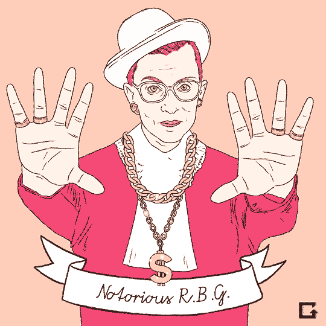

American Supreme Court justice and lawyer
Ruth Bader Ginsburg

Birth Date: 15.3.1933
Born: Brooklyn, New York
Ruth Bader Ginsburg is the second woman ever to sit on the United States Supreme
Court and is known as the legal architect of the modern women's movement.
She, more than any other person, pointed out that many laws encouraged gender
discrimination; that is, they led to better treatment of men than women instead
of guaranteeing
equal rights and opportunities to all as was intended by the United
States Constitution.
Education
Columbia Law Scool
Cornell University
James Madison High School
Harvard Law School
>>
After working for District Judge Edmund L. Palmieri in New York, Ginsburg joined the faculty
of Rutgers University, where, in order to keep her job, she wore overly large clothes to hide
the fact that she was carrying her second child. She was only the second female professor at
Rutgers and one of only twenty women law professors in the country. In 1972, after teaching a
course on women and the law at Harvard University, she was appointed the first female faculty
member in the law school's history.
Supreme Court justice
With the retirement of U.S. Supreme Court Justice Byron White (1917–) in 1993, President Bill Clinton
(1946–) wanted a replacement with the intellect and the political skills to deal with the Supreme Court's
top conservatives. He chose Ruth Bader Ginsburg. Court observers praised her commitment to the details of
the law, her intelligent questioning of lawyers arguing before her, and her talent for using calm and
sensible arguments to win over her fellow judges.
Notable cases
United States v. Virginia, 518 U.S. 515 (1996) Court Opinion
United States v. O'Hagan, 521 U.S. 642 (1997) Court Opinion
Olmstead v. L.C., 527 U.S. 581 (1999) Court Opinion
Friends of the Earth, Inc. v. Laidlaw Environmental Services, Inc., 528 U.S. 167 (2000) Court Opinion
Bush v. Gore, 531 U.S. 98 (2000) Dissenting
Eldred v. Ashcroft, 537 U.S. 186 (2003) Court Opinion
Exxon Mobil Corp. v. Saudi Basic Industries Corp., 544 U.S. 280 (2005) Court Opinion
Ledbetter v. Goodyear Tire & Rubber Co., 550 U.S. 618 (2007) Dissenting
Gonzales v. Carhart, 550 U.S. 124 (2007) Dissenting
Ricci v. DeStefano, 557 U.S. 557 (2009) Dissenting
National Federation of Independent Business v. Sebelius 567 U.S. 519 (2012) Court Opinion
Burwell v. Hobby Lobby Stores, Inc., 573 U.S. ___ (2014) Dissenting
Fan Art


